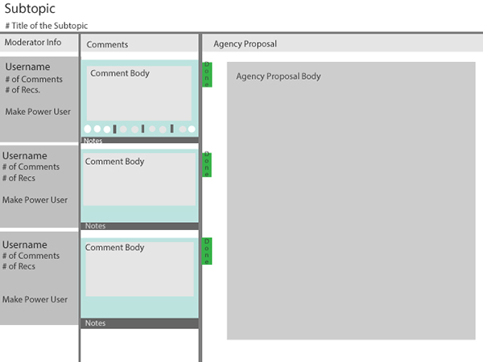
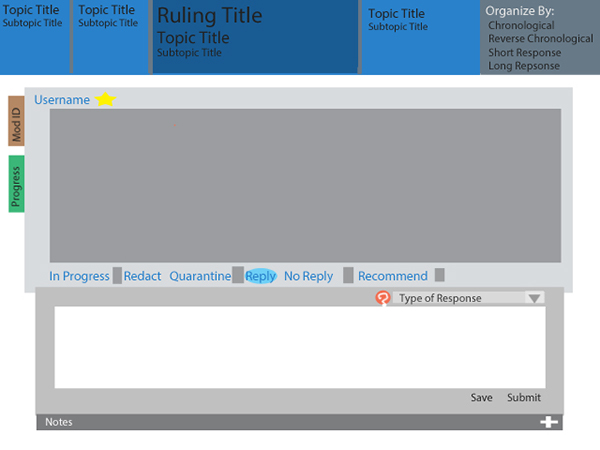
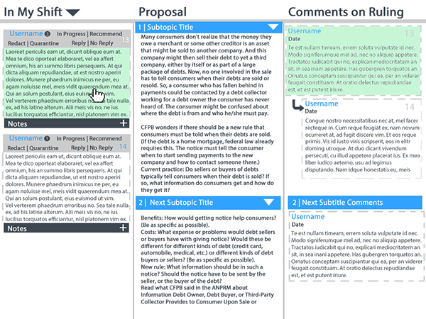
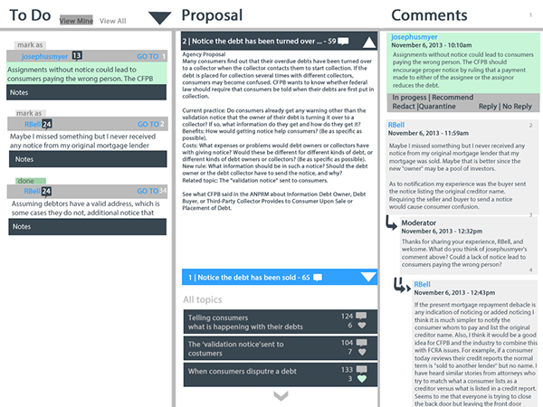

Designs for Moderator Interface for regulationroom.org
Regulation Room
Over the summer of 2014, I worked for Professor Gilly Leshed of Cornell University in the Social Interaction Lab.
I worked on the moderator interface for a website called regulationroom.com, which is a website where government
agencies can post new rulings to the public and the public can comment and make suggestions. Each comment needs to
be read by trained moderators, however, they were having problems reading, sorting and responding to more than 10
comments in an hour. When a new ruling was posted, there would often be about 300 comments in an hour. I was hired
to design an interface that gave the moderators the ability to do their job more effectively and efficiently.
To design this interface I used an iterative research process. Last year, another student interviewed the moderators
for an interface that was never implemented but gathered data on how each moderator completed the given task during the day.
It was my job to read and understand the process of each moderator and then build a new interface to suit all their needs and methods.
Overall I designed 20 interfaces in about 5 cycles. I presented each design to either my Professor or other members
of the Regulation Room team. I used paper prototypes to test early designs.
The final presentation was done in Balsamiq and featured an interactive medium fidelity prototype.
Early Concepts
The early part of this project was understanding what parts of the moderator
interface was causing the problems in efficiency. First I conducted careful research into
the interviews with the moderators and discussion with the moderators' manager.
I determined that the problems arose from the inability to view the agencies' proposal.
at the same time as the users' comments, the inability to
quickly navigate from one subtopic to another, and finally viewing their "To Do" list of comments that their manager gives them.
Many of the early designs focused on changing the smaller part of the moderator interface, rather than redesign the whole interface.

One of the earliest versions of the designs, here I wanted to address the problem that the moderators had with viewing both the comments and the proposal at the same time. Most of the moderators had to keep open multiple tabs in order to feel they were successfully responding to the comment in the scope of the proposal. Here I addressed this issue by having a scrolling sidebar that contained all the comments on the moderator's To-Do list.

This early version of the moderator interface design features a top navigation bar where moderators can navigate easily from sub-topic of discussion to another. While the user can only view one comment at a time, this interface tries to address the problem that the moderators were having with viewing and navigating between each subtopic.
Later Designs
Later designs focused on the moderator interface as a whole, and addressed each of prevailing problems together.
These designs would be the entire moderator page, and allow the user to view all three important sections at once:
the "To Do" List, the comments and the agency proposal. I felt that to make the moderators most efficient, it was
important to allow them to view all their work, since the primary problem from the interviews was the amount of
tabs each moderator had to open to be successful.
These images are the final iterations of three designs presented to the team of professors and professionals working on the project.
To design these interfaces I used an iterative research process. In 2013, another student interviewed the moderators for an interface
that was never implemented but gathered data on how each moderator completes the given task during the day. It was my job to read and
understand the process of each moderator and then build a new interface to suit all their needs and methods. Overall I designed
probably 20 interfaces in about 5 cycles, which each cycle presenting them to either my Professor or other members of the Regulation
Room team. For the final presentation was done in Balsamiq and featured an interactive medium fidelity prototype.

This interface has three columns that represent the various tasks that a moderator would have to accomplish in a session. The left column is the list of comments that a moderator has to go through. Since each team of moderators has a different way of organizing the comments, this list allows the lead-moderator to organize based upon the team. The middle column is the proposal section. This cannot be edited by the moderator, but instead is used as a reference. The final column is the full list of the comments for the subtopic. This was included to allow the moderator to see any other comments that the user may be referencing, or to better understand the flow of conversation. The columns in this design are static.

This design's structure is similar to the first design with three columns. However, in this, the moderator has more control over the organization of the "To Do" List. A moderator can organize by time, user or subtopic. The center column remains the subtopic that is being referenced and the right column remains the list of the all the comments. I felt that this order was directly helping the moderator workflow based on the feedback I received from the moderator interviews. With the moderators, it was common for them to have a list, then review the subtopic before finally viewing and responding to the comment.

This design was chosen as to be the new moderator interface. This design also features a three columns structure. The moderator can only change the “To Do” list in ascending or descending order since we felt that other ways to organize may be giving over functionality. Users can condense or expand comments in the list, which helps reduce the amount of words on the page that the moderator has to handle. The columns for this design are moveable, and this serves to give the moderator over which task they wish to focus on. Columns that are not wanted can be condensed and hidden. This ability to move the columns was the major selling point for the design, since many moderators often had vastly different techniques to completing their tasks. The column moving feature allows moderators to complete tasks in an order that works best for themselves.
Summary
Over the summer of 2014, I worked for Professor Gilly Leshed of Cornell University in the Social Interaction Lab. I worked on the moderator interface for a website called regulationroom.com, which is a website where government agencies can post new rulings to the public and the public can comment and make suggestions. Each comment needs to be read by trained moderators, however, they were having problems reading, sorting and responding to more than 10 comments in an hour. When a new ruling was posted there would often be about 300 comments in an hour. I was hired to design an interface that gave the moderators the ability to do their job more effectively and efficiently.
Home